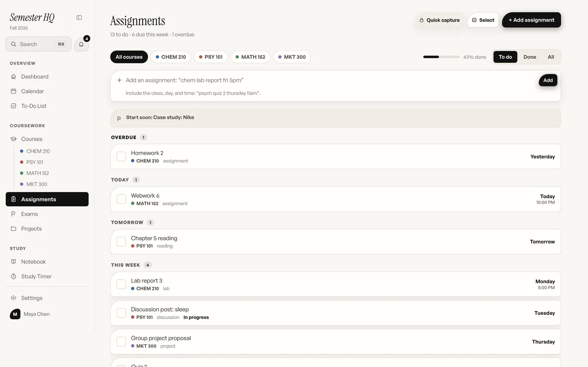

An assignment tracker that knows which class the work is for.
Problem sets, readings, labs, discussion posts, and the exam that was mentioned once in week two. Semester HQ tracks every one of them by class and due date, grouped into overdue, today, tomorrow, and this week, so the list matches the week you are actually having.
Why a to-do app is not an assignment tracker
A general to-do app treats every task the same. College work is not the same. A reading due before Tuesday’s lecture is not a week-long problem set, and neither is a lab report with a 5:00 PM cutoff. When all three sit in one flat list, the list stops telling you anything, and you go back to checking Canvas, the group chat, and the syllabus PDF to work out what is actually owed.
Semester HQ ties every assignment to a class, a type, and a due date and time, down to 11:59 PM. The Assignments page then sorts the lot into overdue, today, tomorrow, and this week, with a count and a percent-done bar at the top. Filter to one class before a lecture. Switch to Done when you want to see what a hard week actually produced. Nothing here tracks grades. It tracks what is due and whether it is finished.
How to set up your assignment tracker in six steps
Budget twenty minutes for the first pass, most of it spent checking what the syllabus gave you. After that, the tracker takes seconds a day.
-
Add your classes, or upload the syllabus
Open Courses and add each class with its meeting days and times. With Semester HQ Plus, upload the syllabus instead: a PDF, Word, PowerPoint, or Excel file, a photo of a printed copy, or pasted text. Every assignment and exam date in it lands in the tracker in about a minute, ready to check and edit. The original file stays in the class page.
-
Type the rest the way you would text it
Anything the syllabus left out goes in through quick add. Type “chem lab report fri 5pm” and Semester HQ picks out the class, the day, the time, and the kind of work while you type, then shows you what it understood before you press enter. Add an exclamation point to mark it high priority.
-
Give big assignments a type and a shape
A reading, a lab, a discussion post, a quiz, and a project each get their own type, so the list tells you what kind of hour you are in for. Turn a paper or a group project into a project instead: pick a template, and the milestones are spaced out between today and the due date.
-
Set up anything that repeats, once
Weekly problem sets, lab write-ups, and discussion posts can be a repeating series. Create it once with the day and time, and every copy appears through the end of the semester. Edit or delete one copy, or every upcoming one, without touching the rest.
-
Work from the grouped list, not the whole semester
Open Assignments each morning. Overdue sits at the top, then today, tomorrow, and this week. Filter to one class before lecture. When a project’s start date is getting close, a start-soon line appears above the list so it does not stay invisible until the week before.
-
Check things off and let the calendar follow
Tick the box and the assignment moves to Done. Every due date already sits on your calendar, color-coded by class, and dragging one to a new day reschedules it. Nothing pings you: the Heads Up bell in the corner gathers what is overdue and what is due next, for whenever you come to look.
What the tracker looks like
This is the Assignments page from the sample semester in the live demo, with four classes loaded.

Paper planner, Google Calendar, Notion, or Semester HQ
Each of these can track assignments. They differ in how much you have to type, and in what the list can tell you once it is full.
| What matters | Paper planner | Google Calendar | Notion | Semester HQ |
|---|---|---|---|---|
| Getting the semester in | Copy every date from each syllabus by hand. | Type each deadline as an event, or import a file if a professor provides one. | Build a database, then type every row. | Upload the syllabus. Dates land in about a minute, editable. |
| Knowing which class it is for | Whatever you wrote in the margin. | Separate calendars per class, if you set them up. | A property you fill in each time. | Every assignment belongs to a class from the start. |
| Grouping by urgency | You scan the week yourself. | Agenda view, by date only. | Views you build and maintain. | Overdue, today, tomorrow, and this week, automatically. |
| Repeating work | Rewrite it every week. | Repeating events, easily. | Possible with templates; takes setup. | A repeating series; edit one copy or all. |
| Exams and projects | A circled date. | An all-day event. | Whatever you design. | A countdown and prep page per exam; milestones per project. |
| Reminders | None, which some people prefer. | Push notifications. | Reminders on dates. | None by design. The Heads Up bell shows what needs you when you open it. |
| Cost | The price of the notebook. | Free. | Free plan, with paid tiers. | $7.99 a month for Plus. |
Paper wins on focus, Google Calendar wins on price and on holding the rest of your life, and Notion wins on flexibility. Semester HQ wins when the work is a semester: it already knows your classes.
Questions about the assignment tracker
Does the assignment tracker sync to my calendar?
Yes, it is the same calendar. Add an assignment and it appears on your Semester HQ calendar the same moment, color-coded by class. Drag it to a new day there and the due date moves with it. Semester HQ keeps its own calendar and does not push events into Google Calendar.
Can it track exams too, not just assignments?
Yes. Every exam gets a live countdown and its own prep page, where you list the topics it covers, rate each one not yet, shaky, or got it, and place study sessions on your calendar. Exam dates come straight from the syllabus when you upload one.
What about a group project with several due dates?
Make it a project. Pick a template such as a research paper or a group presentation, and the milestones are spaced out between today and the due date, each with its own tasks, links, and notes. A semester-long assignment stops being one deadline you ignore until the week before.
Does it track grades?
No. Semester HQ tracks what is due and whether it is done, not points or GPA. That is a deliberate choice: the tracker is for getting the work in, and your grades live wherever your school keeps them.
Can I try the assignment tracker before paying?
Yes. The live demo runs the full interface in your browser with a sample semester loaded, no account needed. It saves nothing and resets on reload. Semester HQ Plus is $7.99 a month when you want your own assignments kept and synced across devices, with a 14-day refund on the first charge.
See everything you owe in one place.
Try the live demo in your browser. No account, nothing saved. Semester HQ Plus is $7.99 a month when you want to keep it.